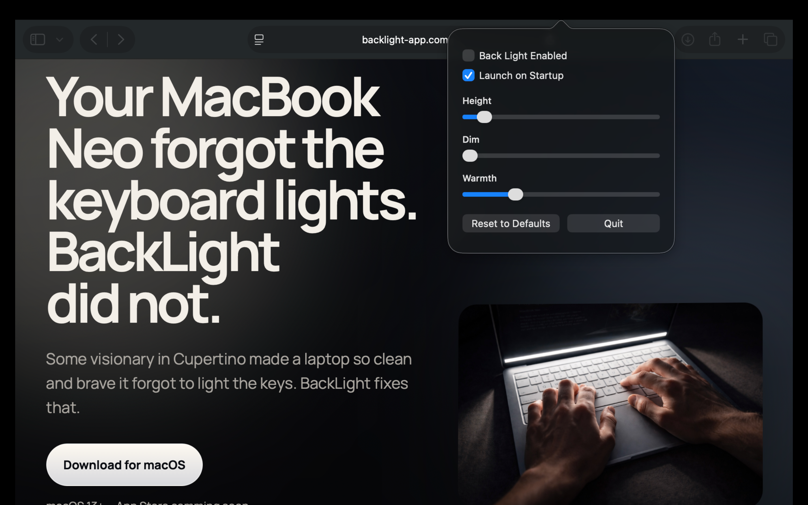
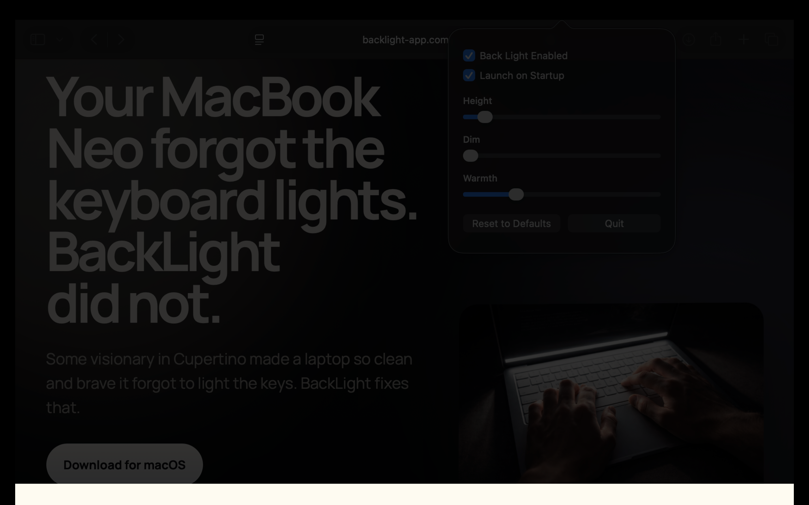

What it does
Pins a clean white strip to the bottom of the display
for the backlightless elite
Some visionary in Cupertino made a laptop so clean and brave it forgot to light the keys. BackLight fixes that.
Pins a clean white strip to the bottom of the display
Turns your screen into a tiny stage light for your keyboard because the hardware team apparently chose chaos.
Because typing in the dark should not require a ring light, a candle, or blind faith in muscle memory.
See it
The white bar sits at the bottom of the display and throws just enough light onto your keyboard to make late-night typing less ridiculous.
Compare it
The difference is simple: without it, the keyboard disappears into the dark. With it, the keys come back into view without changing your whole setup.

